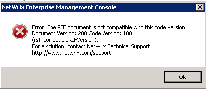

You receive the following pop-up related to Reporting:

SQL Server Reporting Services is not up to date.
SQL Server Reporting Services is not up to date.
This is a known issue in SQL Server 2012 Reporting Services. The fix was first introduced
in CU2 for SQL Server 2012 SP1. You can get the CU2 for SQL Server 2012 SP1 or a later
update from the following blog: